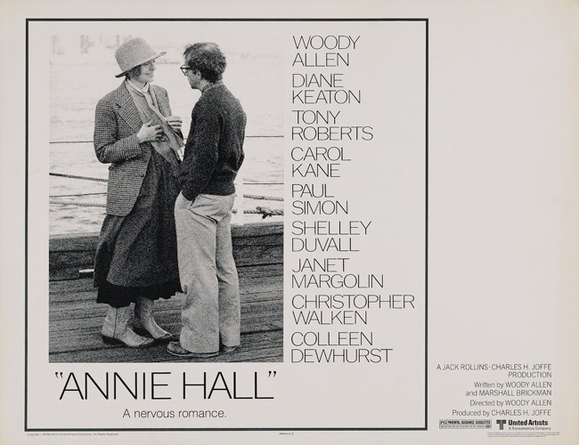
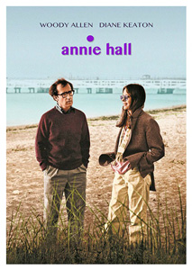
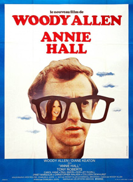
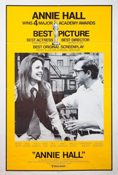
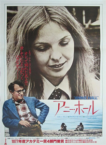
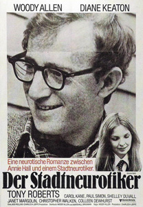
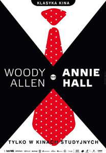

Annie Hall (1977) |
||||
 |
||||
Director |
- |
Woody Allen | ||
Producers |
- |
Charles H. Joffe Robert Greenhut |
||
Screenplay |
- |
Woody Allen Marshall Brickman |
||
Cinematography |
- |
Gordon Willis | ||
Production Designer |
- |
Mel Bourne | ||
Costume Designer |
- |
Ruth Morley | ||
Editor |
- |
Ralph Rosenblum | ||
Cast |
||||
Alvy Singer |
- |
Woody Allen | ||
Annie Hall |
- |
Diane Keaton | ||
Bob |
- |
Tony Roberts | ||
Allison Portchnik |
- |
Carol Kane | ||
Tony Lacey |
- |
Paul Simon | ||
Pam |
- |
Shelley Duvall | ||
Robin |
- |
Janet Margolin | ||
Annie's Mother |
- |
Colleen Dewhurst | ||
Duane Hall |
- |
Christopher Walken | ||
Annie's Father |
- |
Donald Symington | ||
"Grandma" Hall |
- |
Helen Ludlam | ||
Leo, Alvy's Father |
- |
Mordechai Lawner | ||
Alvy's Mother |
- |
Joan Newman | ||
Alvy, aged 9 |
- |
Jonathan Munk | ||
Alvy's Aunt |
- |
Ruth Volner | ||
Alvy's Uncle |
- |
Martin Rosenblatt | ||
Joey Nichols |
- |
Hy Anzell | ||
As Himself |
- |
Marshall McLuhan | ||
The film features a number of appearances by actors who went on to later fame:- Christopher Walken plays Annie's creepy, suicidal brother Duane. Jeff Goldblum at a party phoning his guru - "I forgot my mantra". Sigourney Weaver can be glimpsed as Alvy's date outside a theatre. Beverly D'Angelo plays one of the actors on Rob's TV show. John Glover appears as Annie's previous boyfriend. Shelley Duvall as another date of Alvy who writes for Rolling Stone. In the scene in which Alvy and Annie are observing passers by in the park and Alvy comments, "Oh, there goes the winner of the Truman Capote look-alike contest", the passer by IS actually Truman Capote who appeared in the film uncredited. |
||||
Plot |
||||
Allen plays Alvy Singer, a comedian obsessed with death, attempting to maintain a relationship with the ditzy but exuberant title character (played by Diane Keaton). The film chronicles their relationship over several years, intercut with various fantasy trips into each other's history (Annie is able to "see" Alvy's family when he was only a child and, likewise, Alvy observes Annie's past sexual relationships). In the flashbacks showing Alvy as a child, we learn that he grew up in Brooklyn. His father operated a bumper cars concession. He claims the family home was located below a roller coaster on Coney Island. After several years, many arguments and reconciliations, the two realise they are fundamentally different and split up. Annie moves in with a Hollywood record company executive (played by Paul Simon). Alvy eventually realises he still loves her and tries to convince her to return with him to New York. He fails and, resignedly, returns home to write a drama about their relationship. Later, after they have been able to meet on good terms as friends, Alvy ends the film musing about how love and relationships are something we all require despite their often painful and complex nature. |
||||
Filming |
||||
Allen's working title for the film was Anhedonia (a psychoanalytic term for the inability to experience pleasure) but United Artists considered this and Brickman's suggested alternatives: It Had to Be Jew, Rollercoaster Named Desire and Me and My Goy unmarketable. Ultimately Annie Hall was settled on as the release title. It was originally a drama centred on a murder mystery with a comic and romantic subplot. According to Allen, the murder occurred after a scene that remains in the film, the sequence in which Annie and Alvy miss the Ingmar Bergman film Face to Face. Although they decided to drop the murder plot, Allen and Brickman made a murder mystery many years later: 1993's Manhattan Murder Mystery, also starring Diane Keaton. The production of the film was semi-improvisational. For example in the original script, Alvy didn't grow up under a roller coaster, but when Allen was scouting locations in Brooklyn with art director Mel Bourne, he "saw this roller-coaster, and ... saw the house under it. And I thought, we have to use this." Similarly, there is the scene in which Alvy sneezes into a heap of cocaine, which was purely accidental but Allen decided to keep it in the movie as, when they tested it with audiences, they laughed so much that Allen had to add more footage after the scene so that the following dialogue was not lost. The film breaks with conventional realism: characters frequently break the "fourth wall" by addressing the camera directly and Allen makes use of split-screen imagery, double exposure and subtitles expounding the characters' real thoughts (in contrast with the dialogue). In one scene, Allen's character, in line to see a movie with Annie and listening to a man behind him deliver misinformed pontifications on the significance of Marshall McLuhan's work, leaves the line to speak directly to the audience. Allen pulls McLuhan himself from just off camera to personally correct the man's errors. Allen chose to have Alvy break the fourth wall, he explained, "because I felt many of the people in the audience had the same feelings and the same problems. I wanted to talk to them directly and confront them." Costume designer Ruth Morley, working with Keaton, created a look which had an influence on the fashion world during the late-70s, with women adopting the style: layering oversized, mannish blazers over vests, billowy trousers or long skirts, a man's tie, and boots. Some sources suggest that Keaton herself was mainly responsible for the look, and Ralph Lauren has often claimed credit, but only one jacket and one tie were purchased from Ralph Lauren for use in the film. Allen recalled that the dress style almost did not end up in the film. "She came in," he recalled in 1992, "and the costume lady on Annie Hall said, 'Tell her not to wear that. She can't wear that. It's so crazy.' And I said, 'Leave her. She's a genius. Let's just leave her alone, let her wear what she wants.' " Annie Hall won four Oscars at the 50th Academy Awards in 1978 - Best Picture, Best Director, Best Original Screenplay and Best Actress (Keaton). |
||||
Filming Locations |
||||
The film is set in New York City and Los Angeles. |
||||
Quotes |
||||
"Annie, there's a big lobster behind the refrigerator." |
||||
Music |
||||
| Very little background music is heard in the film, a departure for Allen influenced by Ingmar Bergman. Diane Keaton performs twice in the jazz club: It Had to be You and Seems Like Old Times (the latter reprises in voiceover on the closing scene). The other exceptions include a boy's choir Christmas Medley played while the characters drive through Los Angeles, the 'Molto allegro' from Mozart's Jupiter Symphony (heard as Annie and Alvy drive through the countryside), Tommy Dorsey's performance of Sleepy Lagoon and the anodyne cover of the Savoy Brown song A Hard Way to Go playing at a party in the mansion of Paul Simon's character. | ||||
Reviews |
||||
"Although Woody Allen had still to acquire great technical strength as a film-maker, this was the movie where he found his own singular voice, a voice that echoes across events with a mixture of exuberance and introspection." - John Marriott : Radio Times "While its consonance comes largely from Gordon Willis's photography and Allen's spacious sense of New York, pathos comes at best from Keaton's evaporative performance and a slightly sentimental conception." - Nick Bradshaw : Time Out |
||||
Additional Artwork |
||||
   |
|
|||
   |
||||